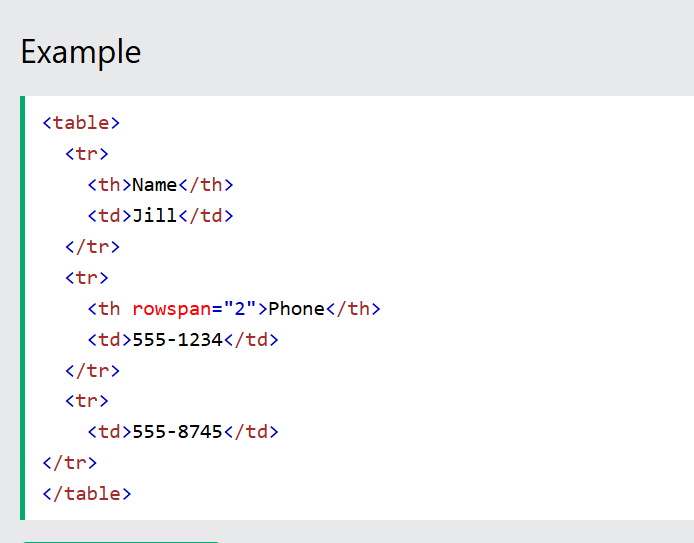

Learn to HTML Code
Web design is the process of creating websites that are attractive, functional, and engaging.
It involves planning, conceptualizing, and implementing a website's appearance, layout, and content.
HTMLTutorial
Home
HTML Introduction
HTML Editors
HTML Basic Elements
Attributes
Styles
images
List
Tabel
HTML tables allow web developers to arrange data into rows and columns.
Something about HTML Table
1.Each table cell is defined by a td and a td tag.
td stands for table data.
2.Each table row starts with a tr and ends with a tr tag.
tr stands for table row.
3.Sometimes you want your cells to be table header cells. In those cases use the th tag instead of the td tag:
th stands for table header.
4.To set the width of a table, add the style attribute to the table element
5.To make a cell span over multiple columns, use the colspan attribute
6.To make a cell span over multiple rows, use the rowspan attribute
